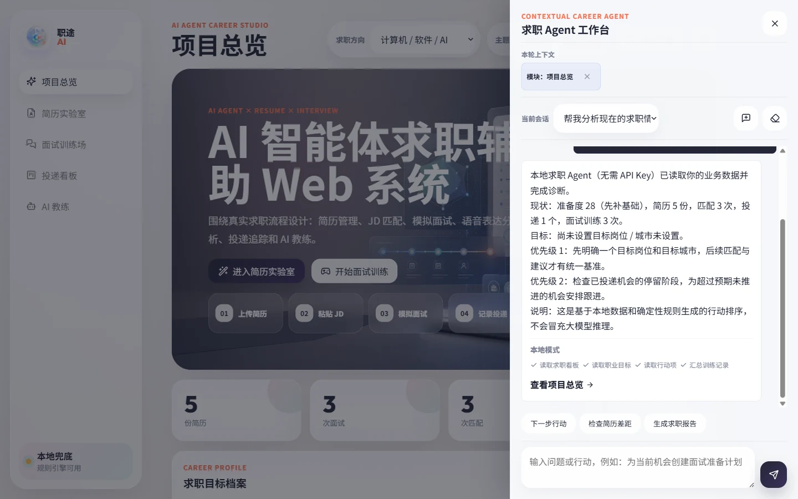
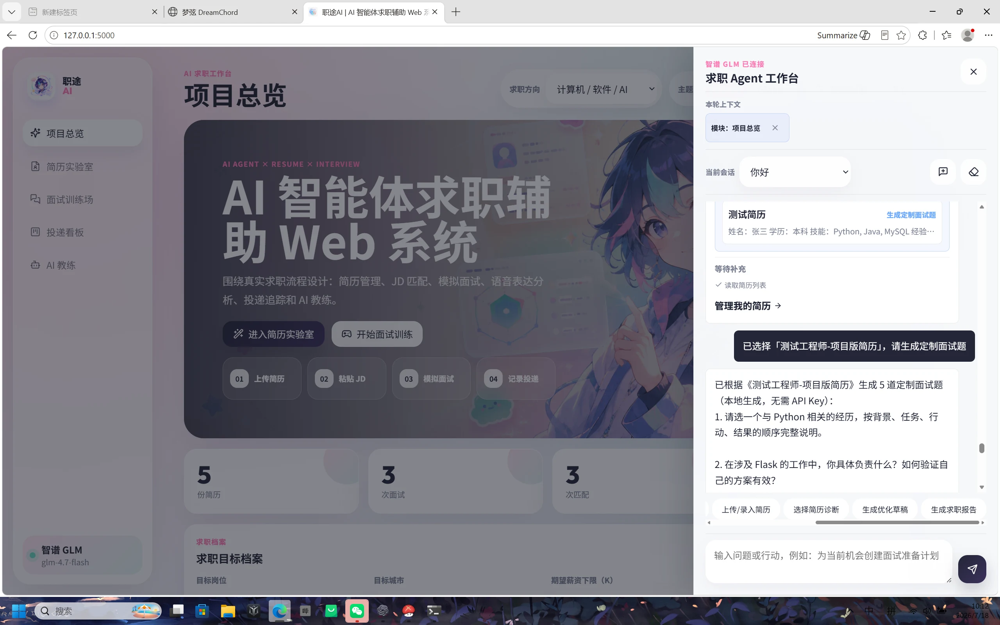
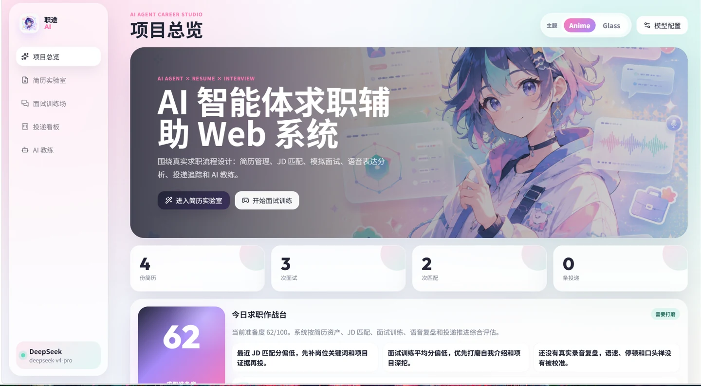
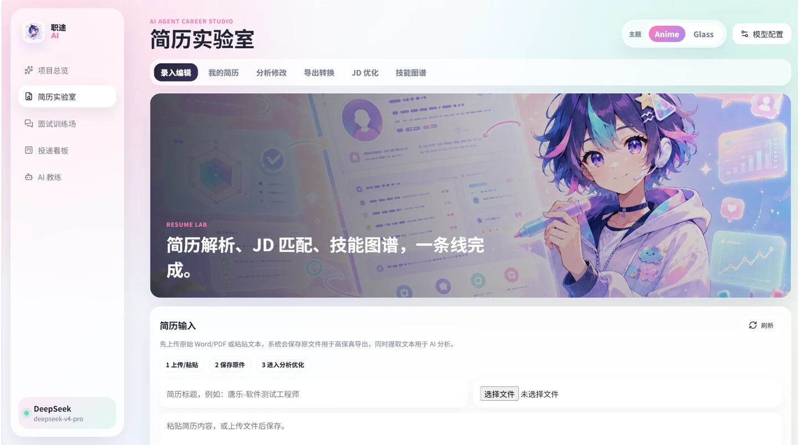
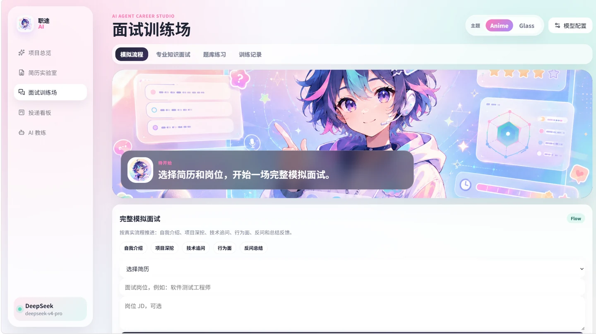
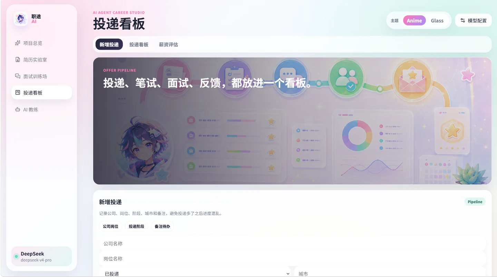
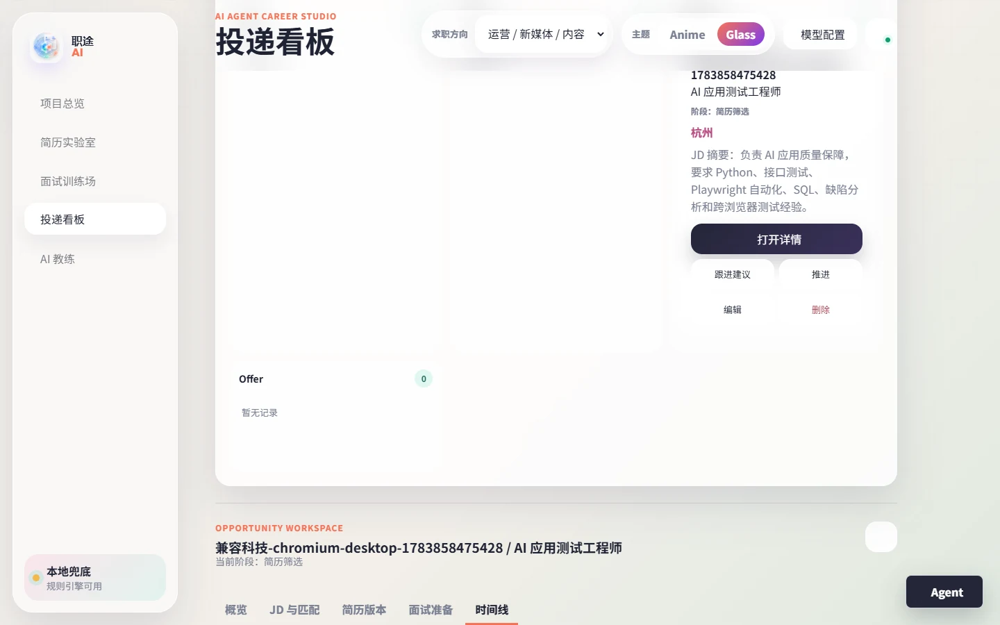

One Career Data Loop
解决的不是单次问答，而是持续数周的求职协作
用户先建立职业目标和简历资产，再围绕真实 JD 做匹配、面试训练和投递跟进。所有结果都会成为后续决策的证据，Agent 不需要用户每次重新讲一遍背景。
业务事实：简历、JD、机会、面试、行动项和时间线
智能辅助：诊断、匹配、训练建议、阶段复盘和安全提案
适用方向：计算机、运营、市场、财务、教育、行政人事
AI Agent × Resume × Interview × Offer Pipeline
一个真正融入业务的求职 Agent Web 系统。它把职业目标、简历诊断、JD 匹配、模拟面试、投递机会和行动复盘串成同一条数据闭环，并根据实时状态安排下一步。
Product Overview
职途 AI 把原本散落在文档、面经、招聘网站和备忘录里的求职数据放回一条六步求职闭环。每个模块都能独立使用，Agent 则负责理解当前状态、寻找阻塞点并协助推进。
One Career Data Loop
用户先建立职业目标和简历资产，再围绕真实 JD 做匹配、面试训练和投递跟进。所有结果都会成为后续决策的证据，Agent 不需要用户每次重新讲一遍背景。
Contextual Career Agent
它不是悬浮在页面旁边的问答机器人。Agent 会读取当前页面上下文、关联简历或机会、分层记忆和实时业务数据，在有限预算内选择工具，综合多个工具结果，再给出可执行建议。

Real Desktop Run
截图来自 1440 × 900 Web 实测。用户询问“帮我分析现在的求职情况”后，本地 Agent 连续读取准备度看板、职业目标、行动项和训练记录，综合多个工具结果，输出当前阻塞点和下一步，而不是把最后一次工具调用原样返回。
综合准备度、职业目标、行动项、训练质量和机会阶段，定位当前最影响结果的阻塞点并排序。
读取指定简历和真实 JD，分析关键词、项目证据、技能缺口与改写方向，并把建议定位到具体机会。
结合岗位、简历、历史回答和训练记录，生成准备重点、薄弱问题与表达练习建议。
盘点停留阶段、风险和最近事件，提出跟进或行动建议；新增、更新业务数据前必须由用户确认。
覆盖简历选择、诊断、草稿与定制面试题、JD、训练、机会、行动项、报告和受限网页读取。
工作、摘要、语义、情景、任务和实时业务记忆分开管理，不把所有历史无脑塞进 Prompt。
确定性任务始终本地优先；有 Key 时再为开放表达与完整简历改写启用 provider-native tool_calls。
所有 Agent 写入统一经过“提议 → 预览 → 单次确认 → 领域服务执行”，并展示 risk_level。
Agent Architecture
智能度不只来自模型。真正决定结果质量的是上下文是否权威、记忆是否相关、工具是否能操作真实业务，以及写入是否可控。
Memory
Tool Registry
| 工具组 | 代表能力 | 产出 |
|---|---|---|
| 简历与 JD | 简历选择、诊断、事实保真草稿、JD 解析、岗位匹配 | 关键词、证据、缺口和可编辑新版本 |
| 面试与训练 | 问题生成、回答评估、训练质量汇总 | 准备重点、薄弱问题和表达建议 |
| 机会与行动 | 机会盘点、详情读取、行动项、操作提议 | 阶段风险、跟进建议和下一步 |
| 职业决策 | 职业档案、准备度、薪资估算、阶段报告 | 目标差距和行动优先级 |
| 公开信息 | 网络搜索、受限网页读取 | 需要时效性的公开资料 |
普通聊天框只生成文字；这里的 Agent 会重建当前页面、简历和机会的权威上下文，检索分层记忆，再由策略路由和 Orchestrator 在预算内调用工具，最后把结果写回具体的求职流程。需要写入时，它只创建可编辑提议，用户确认后才交给领域服务执行并返回回执。
不是标准 ReAct：不展示或依赖隐藏思维链。模型可用时使用 provider-native tool_calls；无 Key 时由 LocalPolicy 完成确定性多工具规划。暂未引入 LangChain / LangGraph，因为当前重点是本地领域事务、确认边界和恢复语义；当出现多 Agent 并行、跨服务长流程或审批状态图时再评估 LangGraph。
Real Product Screens
展示页不仅说明系统做了什么，也直接呈现每个核心模块的实际界面，让功能、流程和视觉风格能一眼对应起来。

Agent Workflow · Current Run
真实桌面运行中，用户不需要记住简历编号：Agent 先给出可点击的简历卡，选中后以真实 resume_id 读取对应内容并生成 5 道题。该流程即使模型已连接也本地优先，避免简单任务被远程调用拖慢或答非所问。

Dashboard
首页把简历、面试、JD 匹配和投递数据聚合成一张求职作战台，并提供真实求职体验路线，用户可以快速看到当前准备度和下一步优先事项。

Resume Lab
围绕简历全生命周期设计，从上传、保存原件、文本解析，到分析修改、JD 优化、技能图谱和格式导出，形成可持续维护的简历资产。

Interview Studio
模拟真实面试推进路径，用户选择简历和岗位后进入流程化训练，同时保留专业知识面试、题库练习和训练记录。

Offer Pipeline
把公司、岗位、阶段、城市、备注和薪资评估放进同一个看板，避免投递多了以后进度混乱，也便于后续复盘。

Opportunity Workspace
围绕一个真实岗位集中组织 JD、匹配证据、关联简历、面试准备和时间线，让 Agent 的建议能够定位回具体机会。
Visual System
系统内置 Anime 和 Glass 两套风格。主题切换会同步影响 Logo、背景、Hero、卡片、视觉素材和状态组件，保证从首页到业务模块都保持一致。
.png)
Anime Theme
柔和粉、薄荷绿、浅紫、插画角色和漂浮 UI 元素，让求职训练更轻松、更有陪伴感。

Glass Theme
使用项目中的真实首页视觉素材，以透明面板、深色层次和数据化组件强调 AI 求职工作台的工具属性。
Core Highlights
不只是一个功能清单，而是从架构到体验的系统性设计，让求职准备真正可追踪、可复盘、可持续优化。
从简历到 Offer，六步数据流转，每步结果沉淀到下一步。告别割裂工具拼凑，所有数据在同一个系统里流通。
接入智谱 GLM、DeepSeek、Kimi 三类供应商。无 Key 时进入明确标记的本地模式，可执行求职诊断、机会盘点、面试准备和简历建议。
基于 Flask、SQLite 和 JSON Schema 实现有界工具循环、策略切换、任务续接和审计记录。当前没有引入 LangChain 或 LangGraph，避免增加重复框架层。
支持计算机、运营、市场、财务、教育、行政人事六大方向，题库、技能雷达和面试追问随方向自动切换。
不只是语音转文字，还结合语速、停顿、语气词、逻辑结构给出多维度表达评分和改进建议，帮用户练"怎么说"。
识别"不知道、跳过、下一题"等回答，不强行编造高分反馈，而是给出合理跳过、参考答案或学习方向。
双击 start.bat 自动检测 Python、检查依赖、安全选择可用端口并打开浏览器；项目已运行时再次双击会直接打开现有页面，不结束其他端口进程。
Tech Stack
项目采用轻量可运行架构，同时覆盖文件处理、模型调用、语音能力、图表渲染和数据持久化。
Run Locally
GitHub Pages / 静态项目展示：本页面只展示项目与验收证据，不能在此直接使用 Agent；完整系统需要在本地启动。
Verification & Boundary
Career Flow
简历、JD、面试、语音和投递记录在同一个工作台里持续流动。